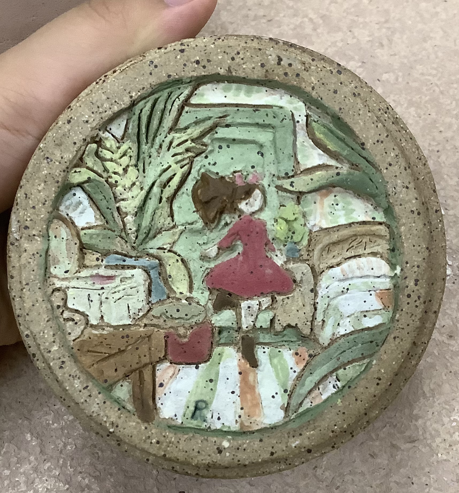
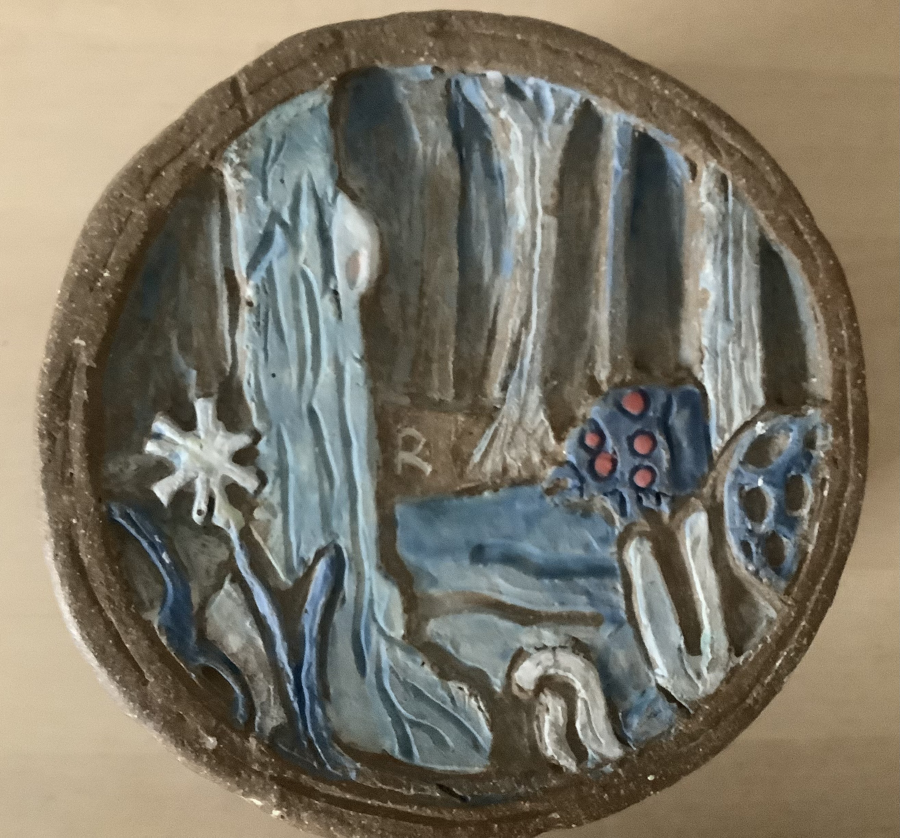
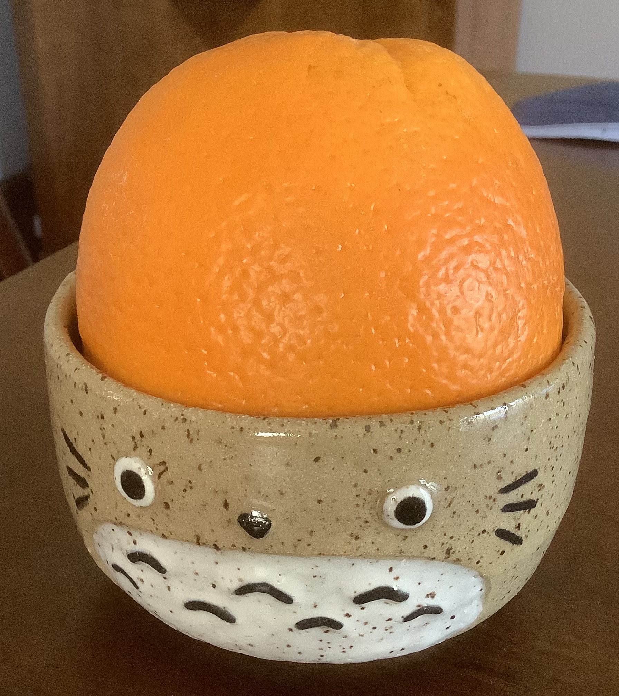

I took a gap year between high school and college, and these pieces are the result! There's a local pottery studio in my hometown that offers classes, which I happily took advantage of. I haven't dedicated enough time towards throwing to be proficient in it yet, but I like handbuilding and carving/glazing pieces a lot. As seen here, I like depicting art from Ghibli movies in my pottery. These three are from The Secret World of Arrietty, Nausicaa of the Valley of the Wind, and Totoro respectively.
Contact: chang.ros@northeastern.edu